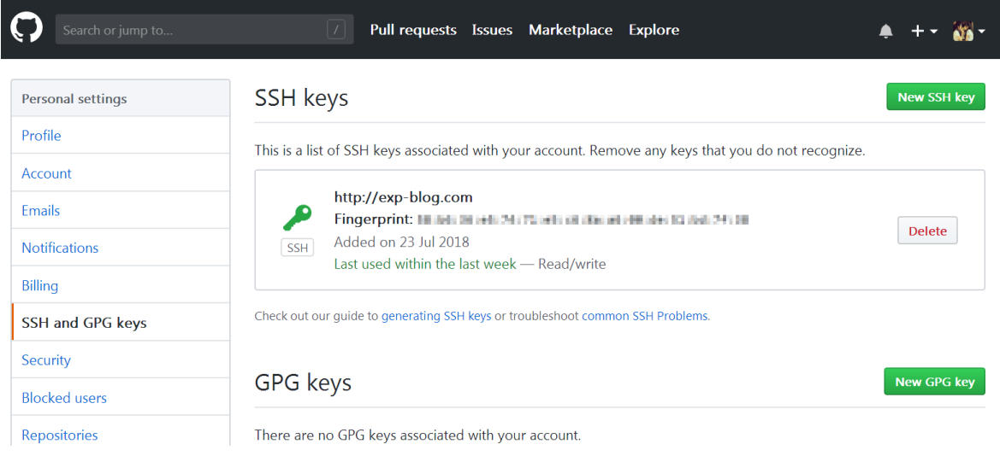

Git命令行安装与使用笔记
1. 安装环境
- 操作系统：Centos 7 （纯命令行环境）
- Git服务器：Github
- 安装的Git命令行版本：1.8.3.1
2. Git下载
首先需要安装git的依赖包：
yum install curl curl-devel zlib-devel openssl-devel perl cpio expat-devel gettext-devel
切到安装目录：
cd /usr/local
Centos自带的Git版本比较旧，这里直接到官网下载最新版 ：
wget http://www.codemonkey.org.uk/projects/git-snapshots/git/git-latest.tar.xz
注意下载回来的是.xz包（注意不是.gz包，我下载的时候，.gz包是0字节，可能是官方的问题），对其解压：
xz -d git-latest.tar.xz
tar -xvf git-latest.tar
解压出来的文件夹是 git-xxxx-xx-xx（xxxx-xx-xx是版本的日期，例如2018-07-23），切到该目录下：
cd git-xxxx-xx-xx
3. Git安装
生成Git的配置脚本configure：
autoconf
修改安装路径，可随意指定：
./configure --prefix=/usr/local/git
注意，若指定的安装路径不存在，则需要先预建目录：
mkdir -p /usr/local/git
编译并安装：
make | make install
把Git命令添加到系统环境变量，修改系统环境变量文件：
vi /etc/profile
在文件最后添加以下内容：
GIT_HOME=/usr/local/git
PATH=$PATH:$GIT_HOME/bin
export GIT_HOME PATH
重载系统环境变量使其生效：
source /etc/profile
通过查看git版本号验证是否安装成功：
git --version
至此Git命令行安装完成。
注：
○ 若安装时不通过 ./configure --prefix=xxx 命令指定安装路径，那么Git的可执行文件默认放在/usr /local/bin，库文件默认放在/usr/local/lib，配置文件默认放在/usr/local/etc，其它的资源文件放在/usr /local/share
○ 那么当需要卸载Git时，要么在原来的make目录下执行make uninstall（前提是make文件指定过uninstall），要么在上述目录中把相关的文件一个个手工删掉。
○ 但若指定了安装路径，则只需直接删掉该路径文件夹即可。
4. 连接Github
配置Github的账号和邮箱：
git config --global user.name "你的Github账号"
git config --global user.email "你的Github邮箱"
生成该GitHub账号的SSH Keys（本质是RSA公私钥）：
ssh-keygen -t rsa -C "你的Github邮箱"
运行该命令后，系统会确认一些问题，什么都不用输入，保持默认，连续三次回车即可。
期间系统会提示所生成的RSA公私钥保存位置（一般在~/.ssh目录）：
- 私钥文件位置：
~/.ssh/id_rsa - 公钥文件位置：
~/.ssh/id_rsa.pub
私钥不要动，只需把公钥设置到Github上就可以实现连接了。
先查看公钥文件内容：
cat ~/.ssh/id_rsa.pub
然后在浏览器登陆你的Github：
Settings => SSH and GPG Keys => New SSH key
把公钥内容复制进去并保存即可：

注：
以后在这台Centos机器连接到Github时，就是使用这对RSA公私密钥，而不用通过Github密码，所以需要保管好这对密钥。
回到Centos，输入以下命令尝试连接到Github：
ssh -T git@github.com
此时会提示以下内容，输入yes即可：
The authenticity of host 'github.com (xxx.xxx.xxx.xxx)' can't be established.
RSA key fingerprint is xx.xx.xx.xx.xx.xx.xx.xx.xx.xx.xx.xx.xx.xx.xx.xx.
Are you sure you want to continue connecting (yes/no)? yes
最终提示以下内容则表示连接成功：
Warning: Permanently added 'github.com, xxx.xxx.xxx.xxx' (RSA) to the list of known hosts.
Hi smartwen! You've successfully authenticated, but GitHub does not provide shell access.
此时随便指定一个目录并切换进去，如：
cd /tmp/
把该目录初始化为Git的代码仓库：
git init
然后就可以同步Github上的项目代码（和它的整个代码历史）到本地了：
git clone 项目仓库URL
5. Git命令手册
由于Centos下并不支持图形化界面（我用的是云服务器，纯命令行），因此需要熟悉Git的命令进行代码版本维护。
一般来说，日常使用只要记住下图6个命令就可以了：

但为了日后使用方便起见，此处整理一下Git的命令清单：
5.1. 专有名词
- Workspace：工作区
- Index / Stage：暂存区
- Repository：仓库区（或本地仓库）
- Remote：远程仓库
5.2. 新建代码库
# 在当前目录新建一个Git代码库
git init
# 新建一个目录，将其初始化为Git代码库
git init [project-name]
# 下载一个项目和它的整个代码历史
git clone [url]
5.3. 配置
Git的配置文件为.gitconfig，它可以在用户主目录下（全局配置），也可以在项目目录下（项目配置）。
# 显示当前的Git配置
git config --list
# 编辑Git配置文件
git config -e [--global]
# 设置提交代码时的用户信息
git config [--global] user.name "[name]"
git config [--global] user.email "[email address]"
5.4. 增加/删除文件
# 添加指定文件到暂存区
git add [file1] [file2] ...
# 添加指定目录到暂存区，包括子目录
git add [dir]
# 添加当前目录的所有文件到暂存区
git add .
# 添加每个变化前，都会要求确认
# 对于同一个文件的多处变化，可以实现分次提交
git add -p
# 删除工作区文件，并且将这次删除放入暂存区
git rm [file1] [file2] ...
# 停止追踪指定文件，但该文件会保留在工作区
git rm --cached [file]
# 改名文件，并且将这个改名放入暂存区
git mv [file-original] [file-renamed]
5.5. 代码提交
# 提交暂存区到仓库区
git commit -m [message]
# 提交暂存区的指定文件到仓库区
git commit [file1] [file2] ... -m [message]
# 提交工作区自上次commit之后的变化，直接到仓库区
git commit -a
# 提交时显示所有diff信息
git commit -v
# 使用一次新的commit，替代上一次提交
# 如果代码没有任何新变化，则用来改写上一次commit的提交信息
git commit --amend -m [message]
# 重做上一次commit，并包括指定文件的新变化
git commit --amend [file1] [file2] ...
5.6. 分支
# 列出所有本地分支
git branch
# 列出所有远程分支
git branch -r
# 列出所有本地分支和远程分支
git branch -a
# 新建一个分支，但依然停留在当前分支
git branch [branch-name]
# 新建一个分支，并切换到该分支
git checkout -b [branch]
# 新建一个分支，指向指定commit
git branch [branch] [commit]
# 新建一个分支，与指定的远程分支建立追踪关系
git branch --track [branch] [remote-branch]
# 切换到指定分支，并更新工作区
git checkout [branch-name]
# 切换到上一个分支
git checkout -
# 建立追踪关系，在现有分支与指定的远程分支之间
git branch --set-upstream [branch] [remote-branch]
# 合并指定分支到当前分支
git merge [branch]
# 选择一个commit，合并进当前分支
git cherry-pick [commit]
# 删除分支
git branch -d [branch-name]
# 删除远程分支
git push origin --delete [branch-name]
git branch -dr [remote/branch]
5.7. 标签
# 列出所有tag
git tag
# 新建一个tag在当前commit
git tag [tag]
# 新建一个tag在指定commit
git tag [tag] [commit]
# 删除本地tag
git tag -d [tag]
# 删除远程tag
git push origin :refs/tags/[tagName]
# 查看tag信息
git show [tag]
# 提交指定tag
git push [remote] [tag]
# 提交所有tag
git push [remote] --tags
# 新建一个分支，指向某个tag
git checkout -b [branch] [tag]
5.8. 查看信息
# 显示有变更的文件
git status
# 显示当前分支的版本历史
git log
# 显示commit历史，以及每次commit发生变更的文件
git log --stat
# 搜索提交历史，根据关键词
git log -S [keyword]
# 显示某个commit之后的所有变动，每个commit占据一行
git log [tag] HEAD --pretty=format:%s
# 显示某个commit之后的所有变动，其"提交说明"必须符合搜索条件
git log [tag] HEAD --grep feature
# 显示某个文件的版本历史，包括文件改名
git log --follow [file]
git whatchanged [file]
# 显示指定文件相关的每一次diff
git log -p [file]
# 显示过去5次提交
git log -5 --pretty --oneline
# 显示所有提交过的用户，按提交次数排序
git shortlog -sn
# 显示指定文件是什么人在什么时间修改过
git blame [file]
# 显示暂存区和工作区的代码差异
git diff
# 显示暂存区和上一个commit的差异
git diff --cached [file]
# 显示工作区与当前分支最新commit之间的差异
git diff HEAD
# 显示两次提交之间的差异
git diff [first-branch]...[second-branch]
# 显示今天你写了多少行代码
git diff --shortstat "@{0 day ago}"
# 显示某次提交的元数据和内容变化
git show [commit]
# 显示某次提交发生变化的文件
git show --name-only [commit]
# 显示某次提交时，某个文件的内容
git show [commit]:[filename]
# 显示当前分支的最近几次提交
git reflog
# 从本地master拉取代码更新当前分支：branch 一般为master
git rebase [branch]
5.9. 远程同步
# 下载远程仓库的所有变动
git fetch [remote]
# 显示所有远程仓库
git remote -v
# 显示某个远程仓库的信息
git remote show [remote]
# 增加一个新的远程仓库，并命名
git remote add [shortname] [url]
# 取回远程仓库的变化，并与本地分支合并
git pull [remote] [branch]
# 上传本地指定分支到远程仓库
git push [remote] [branch]
# 强行推送当前分支到远程仓库，即使有冲突
git push [remote] --force
# 推送所有分支到远程仓库
git push [remote] --all
5.10. 撤销
# 恢复暂存区的指定文件到工作区
git checkout [file]
# 恢复某个commit的指定文件到暂存区和工作区
git checkout [commit] [file]
# 恢复暂存区的所有文件到工作区
git checkout .
# 重置暂存区的指定文件，与上一次commit保持一致，但工作区不变
git reset [file]
# 重置暂存区与工作区，与上一次commit保持一致
git reset --hard
# 重置当前分支的指针为指定commit，同时重置暂存区，但工作区不变
git reset [commit]
# 重置当前分支的HEAD为指定commit，同时重置暂存区和工作区，与指定commit一致
git reset --hard [commit]
# 重置当前HEAD为指定commit，但保持暂存区和工作区不变
git reset --keep [commit]
# 新建一个commit，用来撤销指定commit
# 后者的所有变化都将被前者抵消，并且应用到当前分支
git revert [commit]
# 暂时将未提交的变化移除，稍后再移入
git stash
git stash pop
5.11. 其他
# 生成一个可供发布的压缩包
git archive
6. 示例：工作中使用Git的一般流程
（1）下载远程代码仓库并创建分支：
git clone [远程代码仓库]
git branch [本地分支名称] （创建本地分支）
git branch （查看本地所有分支）
git checkout [本地分支名称] （切换到本地分支）
（2） 写代码.......
（3） 确认变更并提交：
git status （查看文件改变记录）
git diff （查看代码级改变）
git add （确认改变）
git commit -m 提交注释 （提交到当前分支的本地工作区）
git push [远程分支：origin] [本地分支的名称] （上传本地分支到远程仓库）
（4） 去Git管理网站（如Github）创建Merge Request
（5） 等待管理员（有选择地）合并所有人的Merge Request
（6） 管理员合并后，从远程代码仓库更新本地分支：
git checkout master （切换至master）
git pull （从远程master更新至本地master）
git checkout [本地分支名称] （切换至本地分支）
git rebase master [本地分支名称] （从本地master拉取代码更新当前分支）
（7） 拉取更新过程中，若有冲突的解决方法：
① 修改代码文件并解决冲突
② git add . （加入待提交）
③ git rebase --continue （继续执行前面第6步的rebase）
④ 如果仍然有冲突，重复前面①②③步骤
⑤ git rebase --skip （无法解决冲突时的处理手法1：直接用master覆盖本地分支）
⑥ git push -f origin [本地分支名称] （无法解决冲突时的处理手法2：强制用本地的代码去覆盖掉远程仓库的代码。其中origin为远程仓库名）
（8） 去Git管理网站（如Github）重新创建Merge Request
（9） 等待管理员合并Merge Request.......
（10）重复上述对应步骤.......
资源下载
[info] 本文全文下载